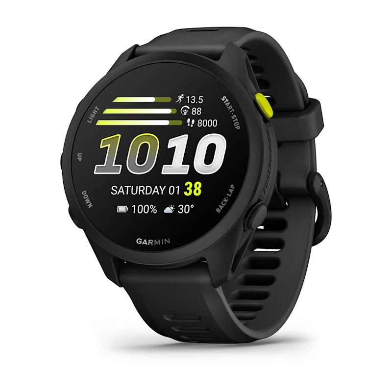

The Garmin Forerunner 70 shows a key shift in Garmin's strategy. While Garmin is a traditionally a more premium brand, with a heavy focus on improving and adding new features to its premium line of smartwatches, such as the Fenix series and higher tier watches, Garmin is starting to trickle down it more premium features back down to its lower end models. Particularly one lower end model stands out from the rest. The Garmin Forerunner 70.